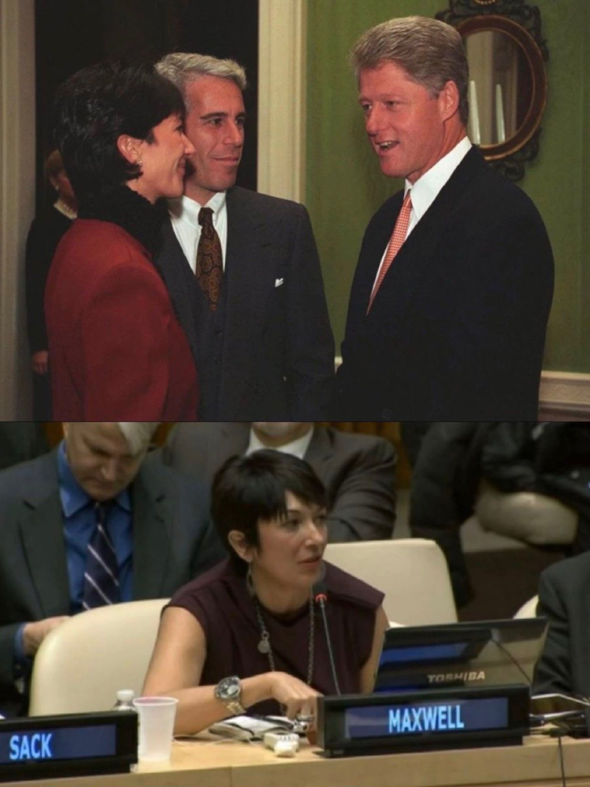

Viral Post Called Two Photos Proof of Epstein Impunity. Both Show a Woman Serving 20 Years
Records show the White House picture came from a 1993 donors’ reception and the U.N. picture from ocean-advocacy events, and the woman in both has lost every challenge to her sex-trafficking conviction.

Two pictures that a viral post on X offered on July 8, 2025, as proof that Jeffrey Epstein’s circle cannot be touched both show Ghislaine Maxwell, the one associate the federal government has prosecuted and imprisoned. The first was taken by a White House photographer on Sept. 29, 1993, at a reception Bill and Hillary Clinton hosted for donors to a restoration of the executive mansion, Clinton Presidential Library records show. The second shows Maxwell at the United Nations, where she appeared as the founder of an ocean-conservation group, including at a June 25, 2013, press conference. Three years before the post, a federal judge in Manhattan had sentenced her to 240 months in prison for helping Epstein sexually abuse girls.
The post, by the account Wall Street Apes, presented the images as the reason “not one child rapist on the Epstein Client List has been brought to justice.” “They’re all in on it,” the post said. “It goes all the way to the top.”
It appeared one day after the Justice Department and the FBI released an unsigned memo on their review of the Epstein files. “This systematic review revealed no incriminating ‘client list,’” the memo says. “We did not uncover evidence that could predicate an investigation against uncharged third parties.” As NPR reported on July 7, 2025, the finding contradicted Attorney General Pam Bondi, who had said in February that the list was “sitting on my desk right now to review.”
The White House photograph is authentic, and its origin is a matter of record. The library’s inventory of that week’s official photographs lists, for Sept. 29, 1993: “President Clinton and Hillary Rodham Clinton host a reception for ‘The Donors to the White House Restoration Project of 1993’ in the Blue Room and the Green Room.” The library told Snopes that White House photographer Ralph Alswang took the pictures, that they were released through a Freedom of Information Act request, and that “‘tour’ is probably not the correct way to describe this image.” A spokesperson added: “The president made brief remarks for the White House Restoration Project event, then greeted individuals present.”
Epstein had paid for his place in the room. Visitor logs that DailyMail.com obtained from the library show he attended the reception, organized by the White House Historical Association, “after he donated $10,000,” with Maxwell beside him, the outlet reported in December 2021. The same logs record at least 17 Epstein visits from 1993 to 1995, the first on Feb. 25, 1993, and 12 of them in 1994. They show when he arrived and who admitted him, not what he did or whom he saw.
The year 1994 matters. Federal prosecutors in Manhattan said that from at least 1994 until about 2004, Maxwell “assisted, facilitated, and participated in Jeffrey Epstein’s abuse of minor girls,” some as young as 14. The reception photograph predates that period by months; the visits logged in 1994 fall inside it. The records establish an overlap in time and nothing more.
Clinton has denied knowledge of Epstein’s crimes. In a sworn declaration to the House Oversight Committee, he said Epstein “may well have attended any of the many hundreds of White House events or receptions during my eight years in office,” but “I do not recall encountering Mr. Epstein, or any specific interactions with him, while in office,” NBC News reported. Deposed on Feb. 27, 2026, he told the committee “I saw nothing” and “did nothing wrong.” The library lists Hillary Clinton as a host of the 1993 reception; her husband told the committee she had “no memory of even meeting him.”
The second image has an equally ordinary paper trail. At a U.N. Headquarters press conference on June 25, 2013, Palau’s ambassador, Stuart Beck, pressed for oceans to be included in the Sustainable Development Goals. “Accompanying him was Ghislaine Maxwell, founder of the TerraMar Project,” the U.N. summary reads. Maxwell said the project aimed to build a “global citizenship for our global commons and for the oceans.” A U.N. video record of the event identifies her the same way.
Stephane Dujarric, the U.N. spokesman, told Check Your Fact in 2020 that to his knowledge Maxwell had never addressed an official meeting of a U.N. legislative body. He said he was “only aware of two instances of her speaking at the UN, one in 2013 and another 2014.” The post’s image shows her seated behind a nameplate in a U.N. conference room; public U.N. records reviewed for this story do not establish which of those events it captures. Either way, the appearances came years after Epstein’s 2008 guilty plea in Florida and years before Maxwell was charged.
That charge came in 2020, and it ended in a conviction. A jury found Maxwell guilty on Dec. 29, 2021, of five counts, including sex trafficking of a minor. On June 28, 2022, Judge Alison J. Nathan sentenced her to 240 months. “This sentence sends a strong message that no one is above the law and it is never too late for justice,” said Damian Williams, then the U.S. attorney in Manhattan.
The one documented legal shield for Epstein’s associates was not a photograph. It was a sentence in Epstein’s September 2007 non-prosecution agreement with federal prosecutors in Florida: “the United States also agrees that it will not institute any criminal charges against any potential co-conspirators of Epstein,” followed by the names of four women, the federal appeals court in New York recounted. A Justice Department internal review in 2020 concluded that then-U.S. Attorney R. Alexander Acosta’s decision to resolve the case through that agreement “constitutes poor judgment,” though it said it “does not find that it resulted from improper factors.”
Maxwell argued that the clause protected her. Every court disagreed. On Sept. 17, 2024, the Second Circuit held that the agreement “does not bind” prosecutors in Manhattan. The Supreme Court denied her petition on Oct. 6, 2025. On Aug. 25, 2026, Judge Paul A. Engelmayer rejected her habeas petition, which called her conviction a “complete miscarriage of justice,” as “demonstrably meritless,” The Associated Press reported.
Sixteen days after the post, then-Deputy Attorney General Todd Blanche questioned Maxwell over two days, July 24 and 25, 2025, Justice Department recordings show; she was soon moved from a federal prison in Florida to a prison camp in Texas. Testifying as acting attorney general on July 15, 2026, Blanche said, “There are no closed investigations,” but told Sen. Cory Booker, D-N.J., that the interview had not led to additional charges, Fox News reported. He said prosecutors had not identified evidence that other men took part in the trafficking, adding, “that does not mean it didn’t happen.” He denied that a pardon, clemency or her transfer was discussed with Maxwell or her lawyers.
The records prove that Epstein and Maxwell moved through rooms of power. They do not prove that those rooms protected anyone: the person in both pictures was charged, convicted and imprisoned. Whether others escaped prosecution for lack of evidence, because of the 2007 agreement or for some other reason is a question the documents leave open.
The point
What we found: the two pictures are real, and both are explained by the record, a 1993 donors’ reception at the White House and ocean-advocacy events at the United Nations. The post offered them as proof that Epstein’s circle cannot be prosecuted, yet both show the one associate who was prosecuted, convicted and sentenced to 20 years. The only documented legal shield for Epstein’s associates was not a photo opportunity but one sentence in a 2007 Florida plea deal promising not to charge “any potential co-conspirators,” a clause Maxwell herself invoked and lost on at every level up to the Supreme Court.
Why it matters
Images of powerful people beside Epstein and Maxwell spread faster than the records that explain them, and they shape what millions believe about whether justice works. Here the record is unusually complete: the library’s photo inventory, the U.N.’s own summary, the court’s judgment and the Justice Department’s memo are all public. They show where accountability came, where it stopped, and that the open question is not whether Maxwell was punished but why the government says it found no one else to charge.
The questions
- Why did federal prosecutors in Miami agree in 2007 not to charge “any potential co-conspirators” of Epstein, and who asked for that clause?
- What did investigators do with the evidence of the “network of underage victims” that prosecutors said Maxwell and Epstein built?
- What did Epstein do, and whom did he see, on the 12 White House visits logged in 1994?
- Will anything in the files released under the Epstein Files Transparency Act produce the new charges Blanche says remain possible?
Sources
- Inventory for FOIA Request 2006-1135-F AV Segment 85 (1993, P08000-P08099) Clinton Presidential Library (National Archives and Records Administration)
- Press Conference by Permanent Mission of Palau, TerraMar Project on Oceans Question in Sustainable Development Goals United Nations Meetings Coverage and Press Releases
- UN / Oceans and Sustainable Development (Unifeed U130625d) UN Audiovisual Library (UNTV)
- Ghislaine Maxwell Sentenced To 20 Years In Prison For Conspiring With Jeffrey Epstein To Sexually Abuse Minors U.S. Attorney’s Office, Southern District of New York
- United States v. Maxwell, No. 22-1426-cr (2d Cir. Sept. 17, 2024) U.S. Court of Appeals for the Second Circuit (via GovInfo)
- Docket No. 24-1073, Ghislaine Maxwell, Petitioner v. United States Supreme Court of the United States
- Justice Department and FBI memorandum on the review of investigative holdings relating to Jeffrey Epstein U.S. Department of Justice and Federal Bureau of Investigation
- Executive Summary of Report: Investigation into the U.S. Attorney’s Office for the Southern District of Florida’s Resolution of Its 2006–2008 Federal Criminal Investigation of Jeffrey Epstein U.S. Department of Justice, Office of Professional Responsibility
- Maxwell Interview: transcripts and audio recordings U.S. Department of Justice
- Fact Check: Here’s What We Know About Bill Clinton, Jeffrey Epstein and Ghislaine Maxwell’s White House Photographs Snopes (Jordan Liles), republished by Yahoo News
- Jeffrey Epstein’s access to the Clinton White House laid bare: Visitor logs reveal pedophile visited the former president at least 17 times DailyMail.com (Daniel Bates)
- Fact Check: Viral Image Claims Ghislaine Maxwell Spoke Before The UN At Least 9 Times Check Your Fact (Elias Atienza), archived by the Internet Archive
- DOJ says no evidence Jeffrey Epstein had a ‘client list’ or blackmailed associates NPR (Ryan Lucas), via OPB
- Federal judge rejects Ghislaine Maxwell’s ‘miscarriage of justice’ claim and bid for prison release The Associated Press, via NY1
- Todd Blanche says ‘no closed investigations’ in Epstein case, vows DOJ will pursue new suspects Fox News (Elaine Mallon)
- Bill Clinton tells lawmakers he ‘saw nothing’ and ‘did nothing wrong’ related to Epstein NBC News (Dareh Gregorian, Ryan Nobles and Kyle Stewart)